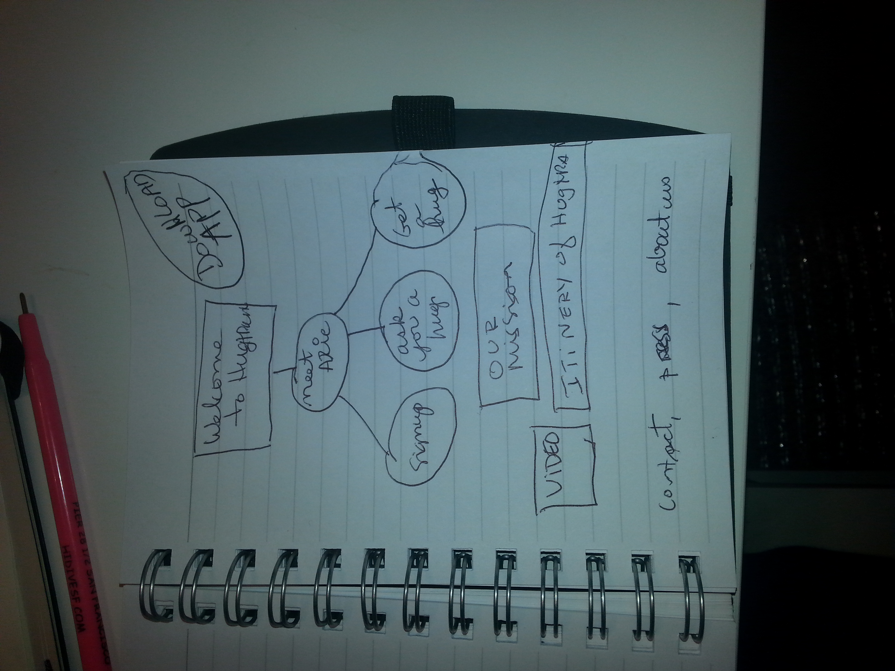
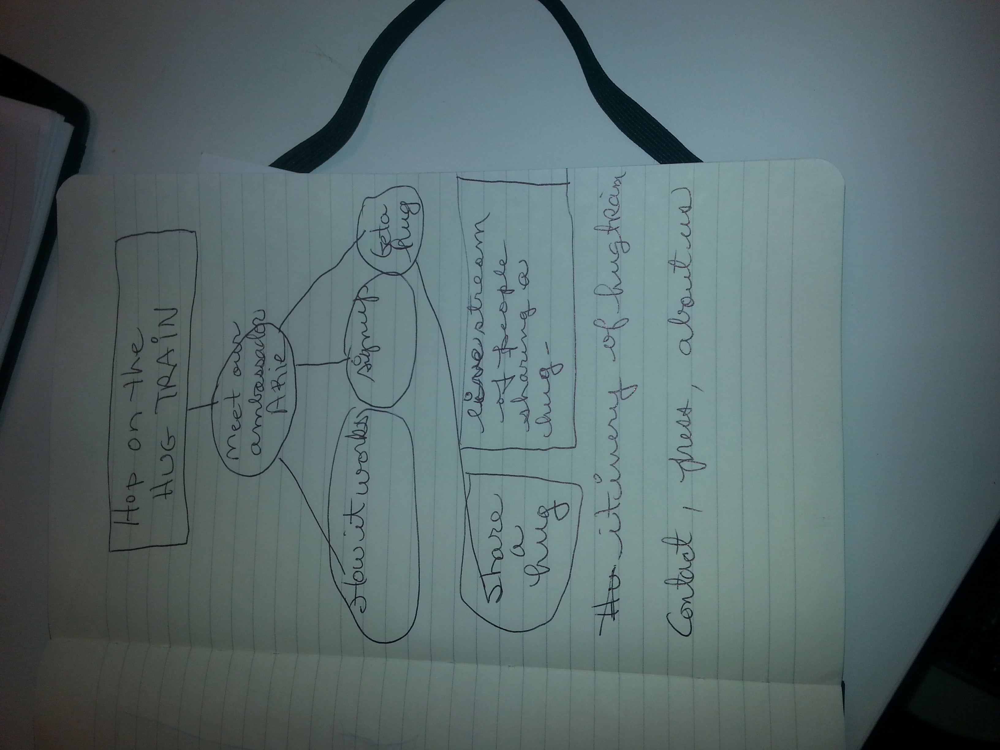
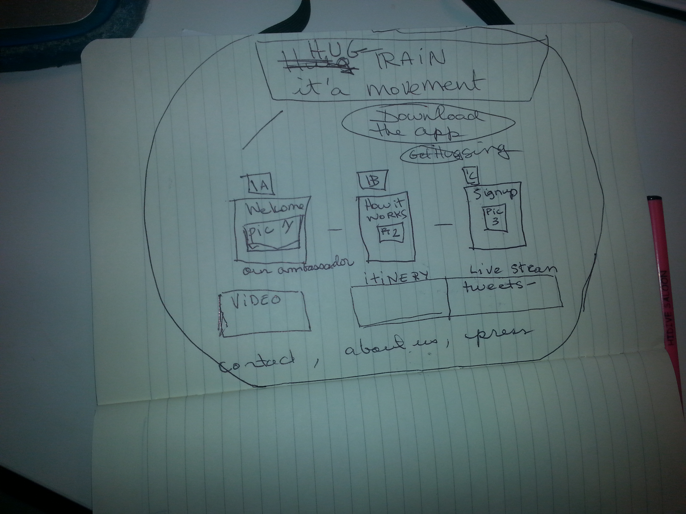

Thumbnail Sketches
sketch1
sketch2
sketch3

Which two websites are you most inspired by?
Site number 1: Pittsburgh For Kids
How do they exhibit effective use of space, size or balance?
GetPennies
a) I viewed my site on desktop,smartphone and tablet its flowed properly on the three platforms and I was satisified
with space, size or balance.
The Call to Action seems to download for your iPhone was strong.
Target audience seems to be young people managing small budgets
Improvements
b) third Below Fold –under An Everyday Money Tracker.I would
eliminate one row, right now they are two. It is too long of a scroll down the
site. I would try to condense some sections. Some info appears to be
repetitive. Also the web copy isn’t strong and is confusing.
Children's Museum of Pittsburgh
- https://pittsburghkids.org/a)
a)the Focal Point is the slider
where invites the user to get familiar with different programs and events. A child could easily view it.
Improvements
b)The last Below Fold – is too busy with sections, images and text. There is so much information that it is overwhelming.
The search field should be on top and not at the bottom.Why make people search for the search bar?
The Recent news and upcoming section: events aren’t distinguished from one another.The flow is poor.Overall, there is too much information on the homepage.
What makes them similar and different?
The color scheme is similar- green and blue but the Children's Museum of Pittsburgh emphasis its call for action with bright yellow.
The Children's Museum of Pittsburgh tries to energize people into visiting them with focus on activities while Pennies tries to soothe people and remove some of the anxieties associated with managing finance.